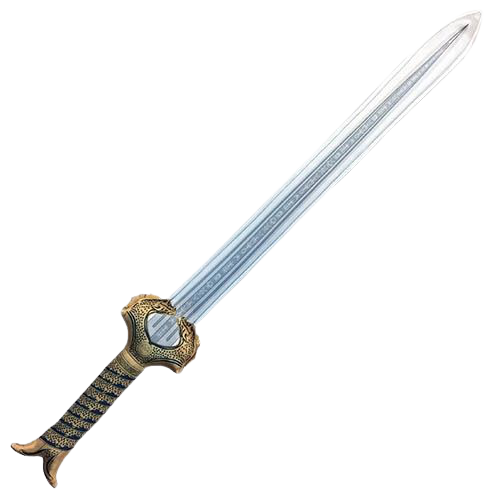

WONDERWOMAN
Bella como Afrodita, sabia como Atenea, más rápida que Hermes y más fuerte que Hércules, la princesa Diana de Themyscira lucha por la paz en el mundo del hombre. WW, una de las superhéroes de DC más queridas e icónicas de todos los tiempos, se ha mantenido durante casi 80 años como símbolo de la verdad, la justicia y la igualdad para las personas de todo el mundo. Criada en la isla escondida de Themyscira, también conocida como Paradise Island, Diana es una amazona, como las figuras de la leyenda griega, y el regalo de su pueblo a la humanidad.
